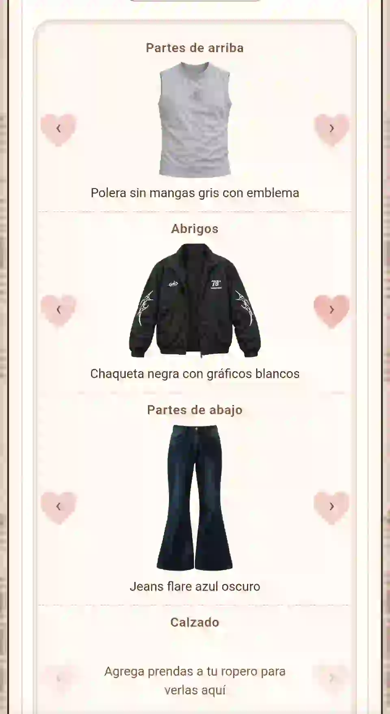

WEB APP · 0101
ENTRECAPAS / ROPERO DIGITAL
Tu ropa.
Otra perspectiva.
Guarda prendas, arma conjuntos y juega con un probador 2D. El ropero se conserva localmente en el dispositivo.
ReactTypeScriptIndexedDB
